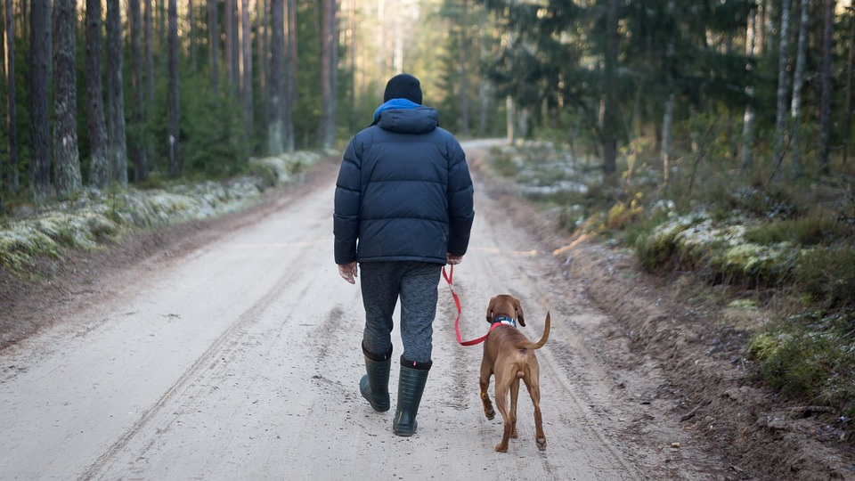
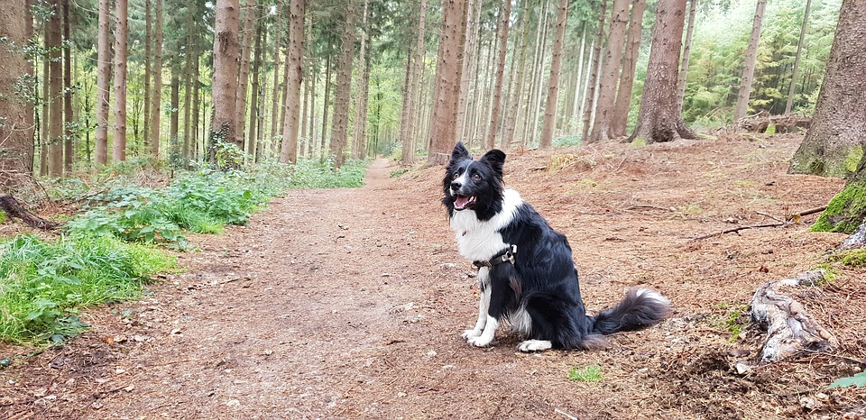

Vous trouverez dans cette section les sites que nous utilisons pour planifier nos randonnées. Ces sites vous suggèrent des sentiers; certains vous renseigneront également sur la règlementation à respecter.
| espaces |
Carte interactive Où faire de la rando avec pitou? de Nathalie Rivard1 19 parcs recensés 2 autres sites proposés (partoutavecmonchien.com et baliseqc.ca) |
Aucune information sur les règlements. Consultez les sites officiels des parcs. |
| Versant Plein air |
Top 7 de Audrey, Sophie et Katherine avec photos et commentaires Durée, distance, activités, avantages et inconvénients...tout y est! Des dizaines de suggestions supplémentaires triées par région, au Québec et aux États-Unis |
Règlements abordés dans les commentaires (par sentier) Liens vers les sites web officiels des parcs et de la SÉPAQ |
| SÉPAQ |
Ensemble des parcs nationaux (16) de la SÉPAQ Projet-pilote Présence (permise/interdite) dans les parcs nationaux, les réserves fauniques, les établissements touristiques. Cartes des endroits autorisés par parcs. |
Fournit le code de conduite du propriétaire responsable et les règles d'encadrement de la SÉPAQ |
| Sentier | Parc national |
|---|---|
| Pointe-de-l'Islet | Parc national du Fjord-du-Saguenay |
| Le Riverain | Parc national des Hautes-Gorges-de-la-Rivière-Malbaie |
| Le Gros-Pin | Parc national des Grands-Jardins |
1Rivard, N. (2018, 14 août). Carte : où faire de la rando avec pitou? Repéré à https://www.espaces.ca/articles/destinations/amerique/canada/quebec/gaspesie/2121-carte-ou-faire-de-la-rando-avec-pitou